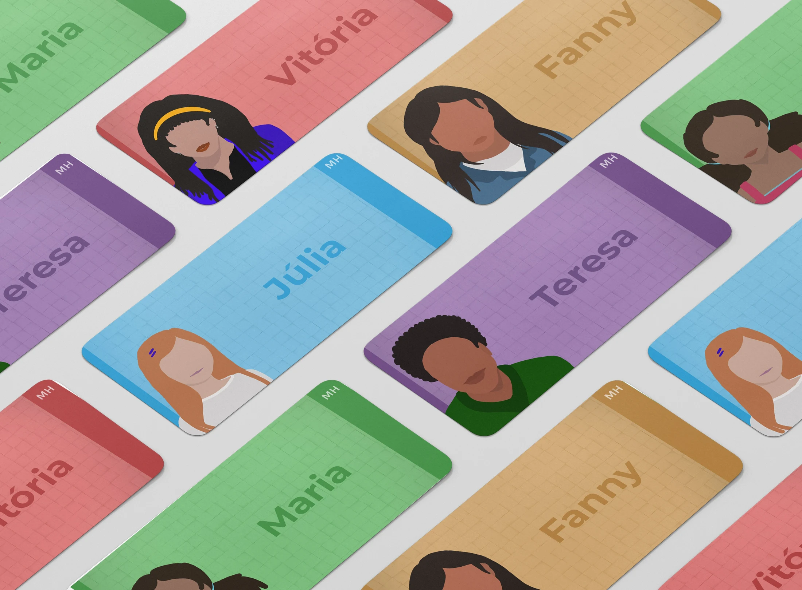
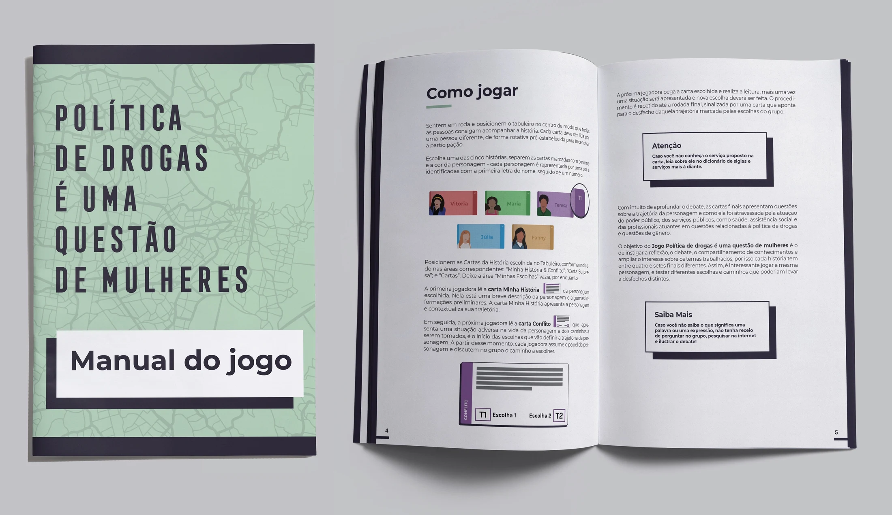
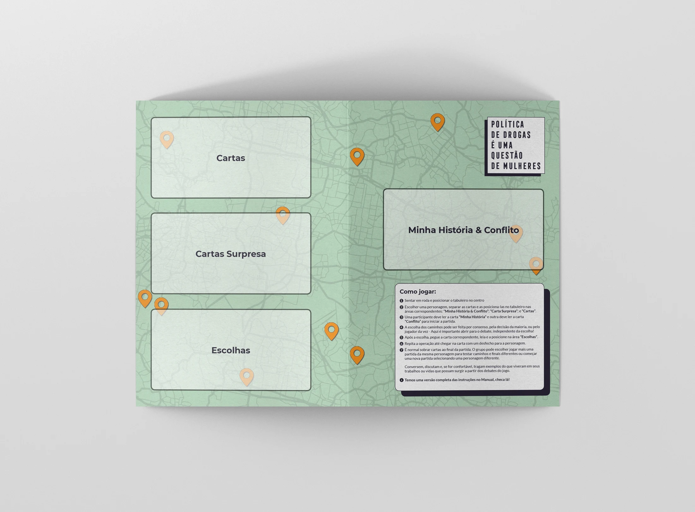
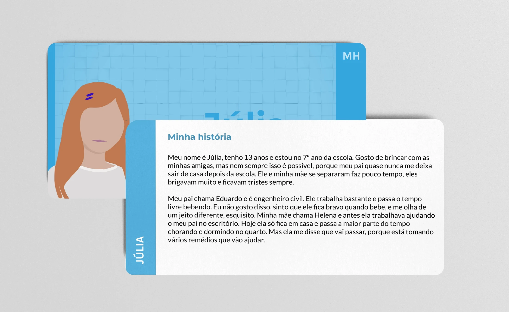

Política de Drogas é uma Questão de Mulheres
Drug policy is a matter of women is a game that brings the daily lives of different women that suffered the impacts of drug policy in São Paulo city.
The main objective of the game is to recreate the story of some of the countless women that use the support of the Institute (ITTC). By using the dynamic and playful mechanics that only games can provide, we aimed to create a material that would be able to foster spaces for reflection and serve as an instrument to train and improve the awareness of public servant professionals.
My responsibilities were:
- Assist with the core Game Design of the game
- Plan and conduct playtests
- Plan all card game pieces such as the cards and the board
- Design and illustrate the characters according to descriptions given by the ITTC team
- Create the whole graphic design for the cards, board and instruction booklet
- Prepare all material to be ready for printing
- Create mockups of the game




Extra
Links
Print & Play